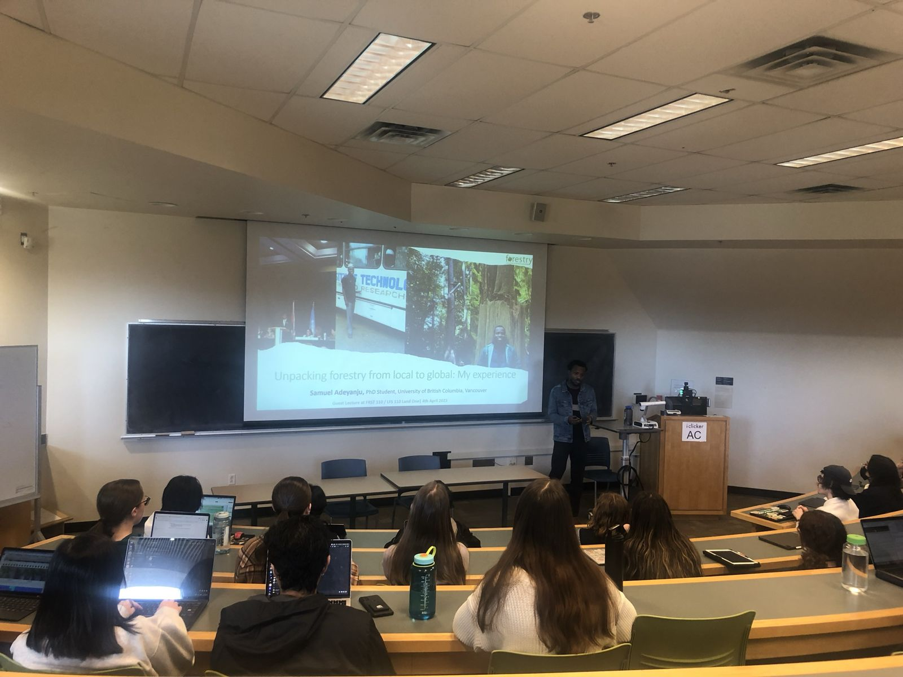

Courses, guest lectures, and teaching assistant experience.
I bring field research from Ghana and Nigeria into the classroom, helping students connect conservation theory with the lived realities of the communities it affects.
Teaching interests
Foundations of Conservation
Human Dimensions of Conservation
Community Forests and Community Forestry
Forests and Society
Agroforestry Value Chains and Rural Economic Development
Natural Resources Management and the African Continent
Guest lectures

Guest lecture, “Unpacking forestry from local to global: My experience,” FRST 110 / LFS 110 Land One, UBC, April 2023
FRST 559 · Natural Resource ManagementMaster of International Forestry, University of British Columbia
2026
Topic: Assessing the impact of shea value chain development interventions on women in Ghana
FRST 110 / LFS 110 · Land One: First-year Integrative SeminarUniversity of British Columbia
2023
Topic: Unpacking forestry from local to global: My experience
CONS 200 · Foundations of ConservationUniversity of British Columbia
2022
Topic: Historical and contemporary conservation approaches in Africa: An introduction
Research and Scholarship Webinar SeriesSchool of Education and Urban Studies, Morgan State University
2022
Topic: Feasibility of online learning during the pandemic
ProQuest webinarProQuest, United Kingdom
2021
Topic: Amplifying master's and doctoral research from African universities through institutional repositories
CONS 370 · Aboriginal ForestryUniversity of British Columbia
2020
Topic: Drivers of biodiversity conservation in sacred groves in southwest Nigeria
FRST 370 · Community ForestryUniversity of British Columbia
2019
Topic: Drivers of biodiversity conservation in sacred groves in southwest Nigeria
Teaching assistant
University of British ColumbiaCONS 210 · Visualizing Climate ChangeFall 2023
University of British ColumbiaFRST 110 / LFS 110 · Land One: First-year Integrative SeminarWinter 2023
University of British ColumbiaFRST 110 / LFS 110 · Land One: First-year Integrative SeminarFall 2022
University of British ColumbiaCONS 200 · Foundations of ConservationWinter 2022
University of British ColumbiaCONS 370 · Aboriginal ForestryWinter 2020
University of British ColumbiaFRST 370 · Community Forests and Community ForestryFall 2019